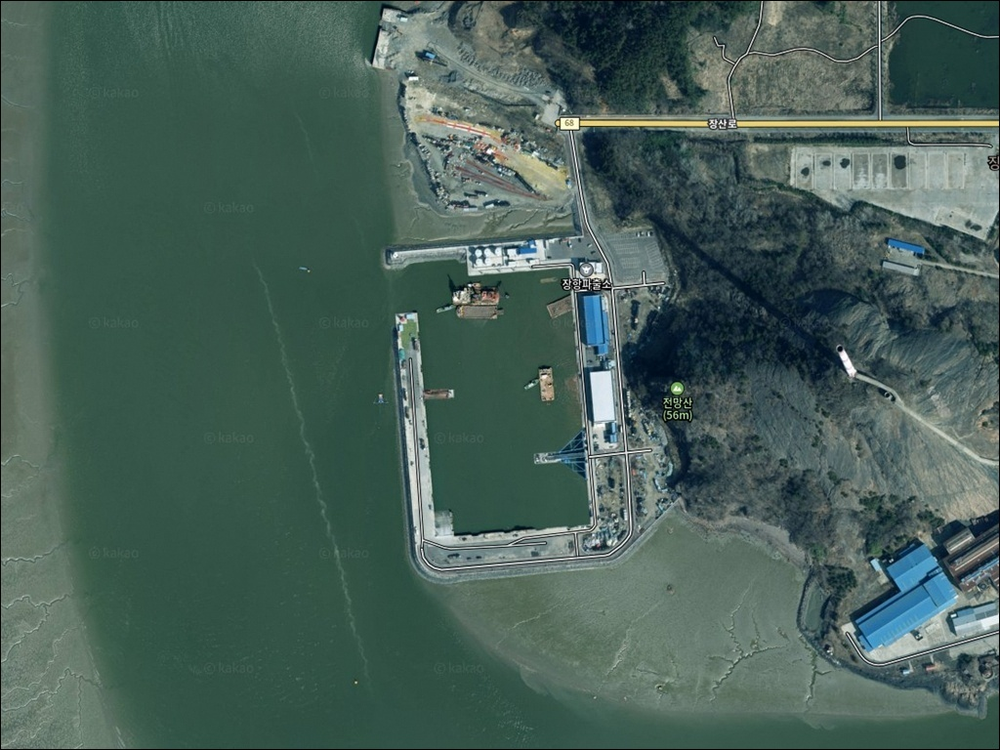
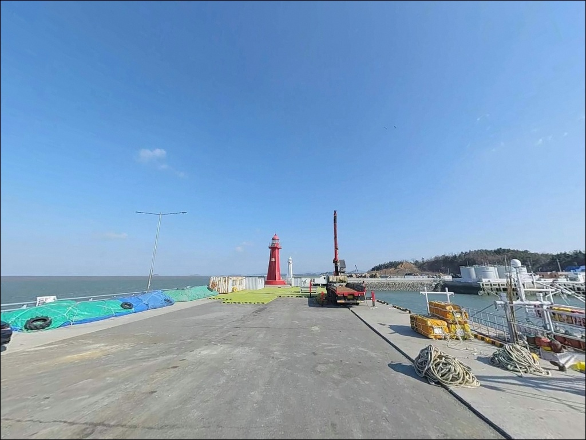
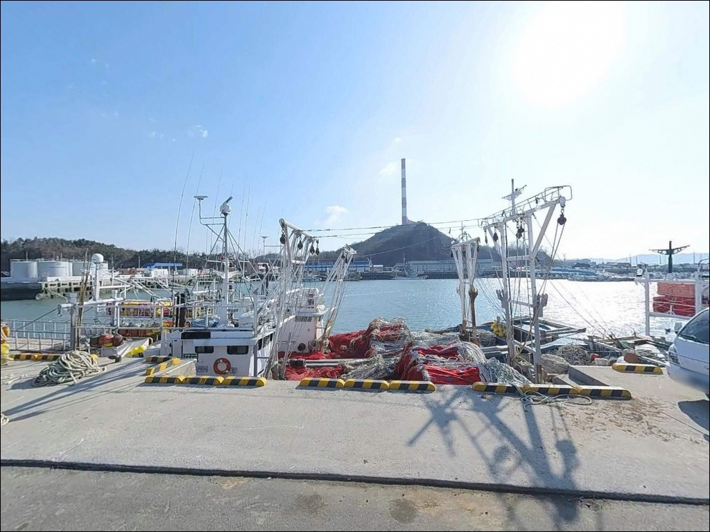
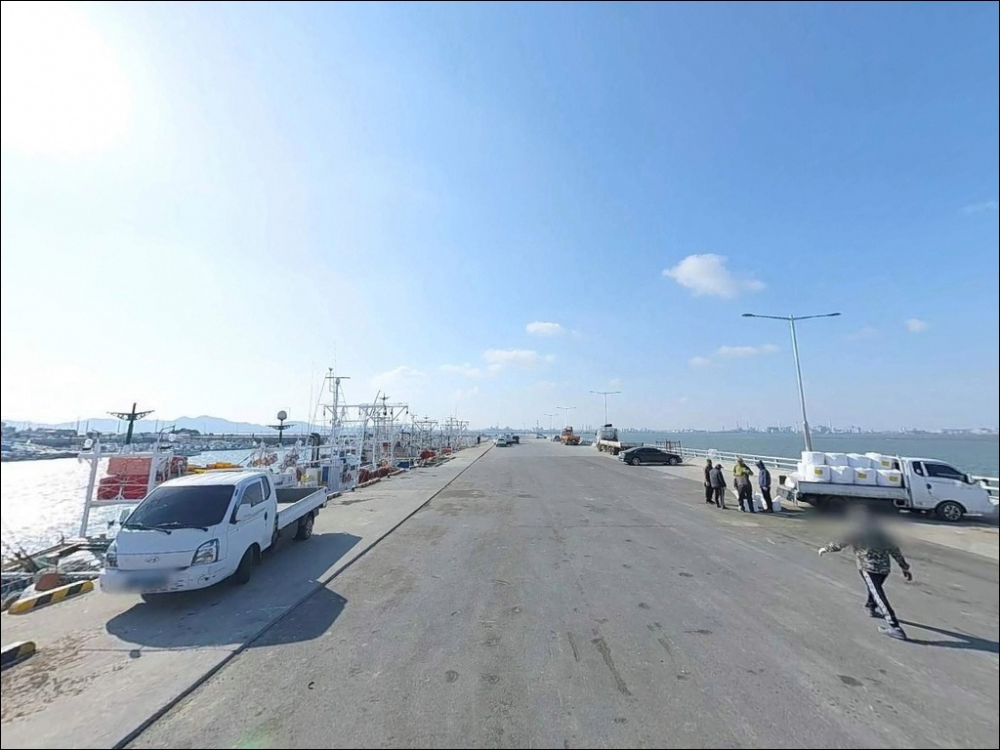
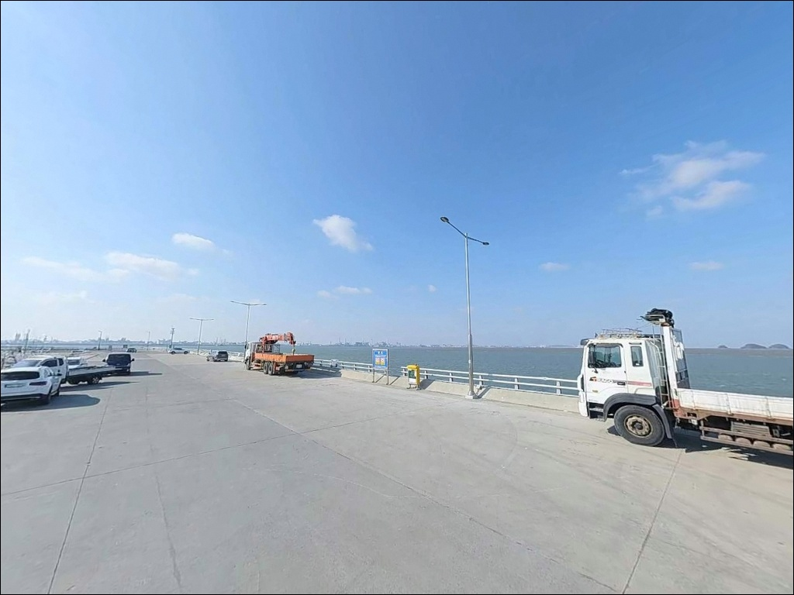
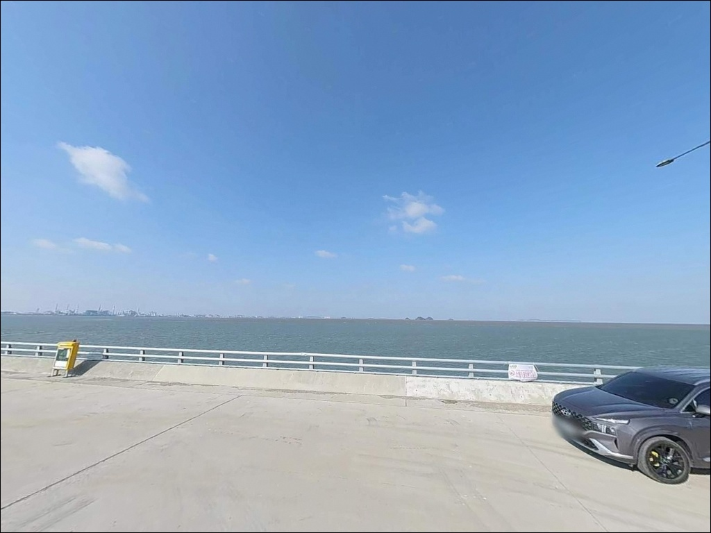
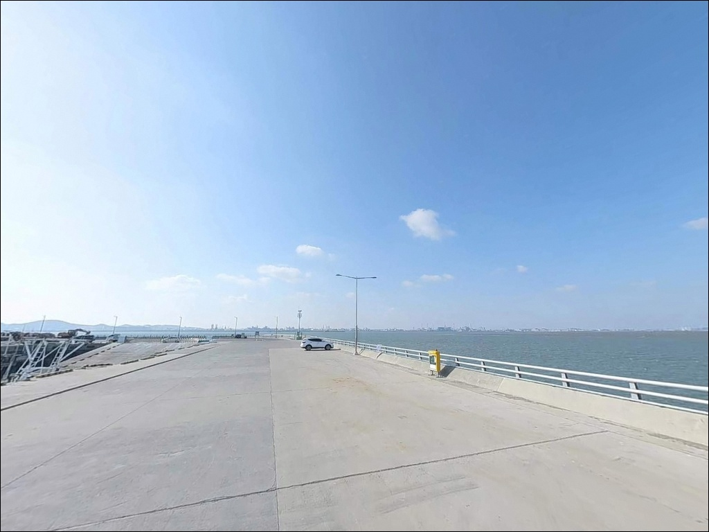
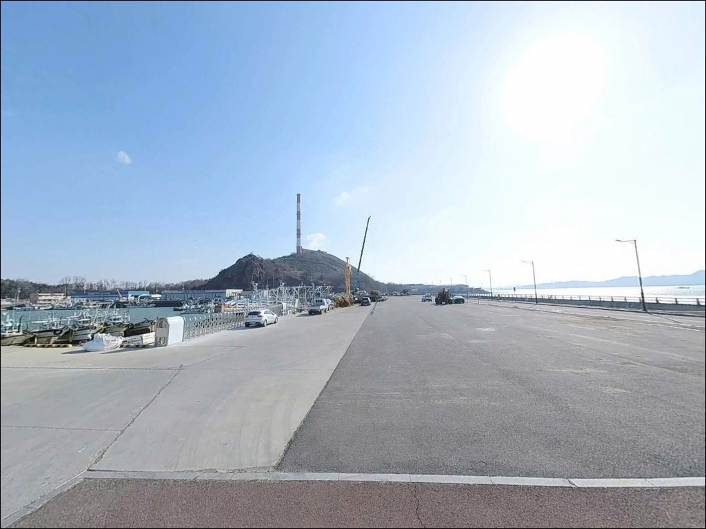
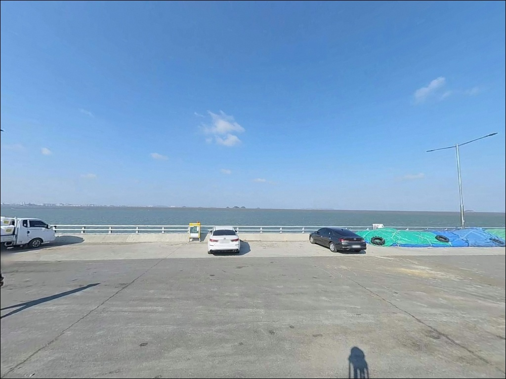

이 페이지에는 광고(제휴 링크 포함)가 있으며, 광고 링크를 통해 구매하면 운영자가 판매 수익 또는 수수료를 받을 수 있습니다. 포인트 사진: 카카오맵 스카이뷰·로드뷰. 이 페이지의 지도·사진 이미지는 카카오맵의 실제 서비스 이미지와 다를 수 있습니다.

장항항
충남 서천군 장항읍 장암리 435-3
서해 기수역 특성상 장항항은
물때 계산 없이 진입하면
간조 시 수심이 사라지는 구간이 생기는 포인트입니다.
그 시간대에 도착하면
어떤 채비를 던져도
바닥만 긁다 끝나는 상황이 됩니다.
이 글은 장항항의 지형 구조,
물때 판단 기준, 낚시 스타일별 공략 조건에 집중합니다.
조황 단정이나 특정 어종 보장은
이 글의 범위에 포함되지 않습니다.

장항읍 시내에서 물양장 방향으로 이어지는 도로는
포장 상태가 양호하고
항만 배후 도로 기준으로 폭도 여유 있는 편입니다.
대형 SUV나 캠핑 장비를 갖춘 차량도
진입과 회차에 큰 어려움이 없는 구조입니다.
물양장 일대가 넓게 형성되어 있어
차량을 세울 수 있는 공간은 확보됩니다.
다만 항만 작업 차량과 화물 차량이 이용하는 공간이므로,
어선 입출항 동선과 작업 구역을 먼저 확인하고
자리를 잡는 것이 기본 순서입니다.
항만 주소 기준 반경 1km 이내에
장항파출소가 위치해 있어
야간 안전 측면에서는 비교적 안심할 수 있는 환경입니다.
장항항은 물양장 주변을 걸어서 이동하며
복수의 자리를 탐색하기 좋은 구조이기도 합니다.

장항항 물양장 주변은
산업 시설과 인접한 항만 배후지 분위기입니다.
야간에는 시설 조명이 일부 켜진 구역도 있지만,
구역에 따라 조도가 낮고 인적이 드문 공간이 섞여 있습니다.
도착 후 주변 환경을 직접 확인하는 것이 먼저입니다.
조용한 해변 차박이나 숲 차박과는 성격이 다른 공간입니다.
숙영 자체보다는 낚시 출조 전후 잠깐 대기하거나
이른 아침 물때를 맞추기 위한 전진 거점으로
활용하는 방식이 이 포인트에 더 잘 맞습니다.
항만 구역 내 야영·취사는
관할 기관 확인이 선행되어야 합니다.
대산지방해양수산청에 사전 문의하거나
현장에서 허용 여부를 먼저 파악하는 것이 기본 절차입니다.

장항읍 시내가 항구에서 차로 5분 이내 거리에 있습니다.
편의점, 식당, 농협하나로마트 장항농협본점,
장항전통시장이 반경 3km 이내에 자리하고 있어
식수, 간식, 낚시 소품 조달이 어렵지 않습니다.
병의원과 약국도 읍내 생활권 안에 있습니다.
군산 방향으로 10km권을 넘어서면
대형 마트와 도시 인프라를 이용할 수 있습니다.
국립생태원과 장항송림자연휴양림도
같은 생활권 안에 있어
가족 동반 출조 코스로 연계하기 좋은 위치입니다.

장항항 방문에서 가장 먼저 확인할 것은 물때입니다.
서해안 특성상 조수간만의 차가 크고,
금강 하구 기수역이라 간조 시 수심이
크게 낮아지는 구간이 있습니다.
바다타임에서 장항 기준 물때를 확인하고
만조 전후 2~3시간을 기준으로
출발 시각을 맞추는 것이 기본 전략입니다.
기상 예보도 출발 당일 아침에 다시 한번 확인하는 편이 좋습니다.
강풍 예보가 있거나 파고가 높으면
물양장 가장자리에서의 낚시는 위험할 수 있습니다.
원투낚시를 준비한다면
기수역 조류에 맞게 봉돌 무게를 넉넉히 챙기는 것이
채비 컨트롤에 유리합니다.
야간 낚시가 포함된 일정이라면
헤드랜턴과 구명조끼는 필수입니다.
물양장 가장자리는 미끄럼 사고 위험이 있으며,
야간에는 예상보다 조도가 낮은 구간이
넓게 펼쳐질 수 있다는 점을 염두에 두어야 합니다.

장항항은 서해와 금강이 만나는 기수역에 위치합니다.
기수역이란 강물과 바닷물이 교차하는 구간으로,
계절과 수위에 따라 어종 구성이 크게 달라지는 지형입니다.
민물 유입과 바닷물 교차가 반복되는 이 구간은
조류 방향과 세기가 시간대별로 뚜렷하게 변합니다.
물양장은 직선형 안벽 구조로 이루어져 있고,
내항 쪽은 비교적 잔잔하며
하구 방향 외항 쪽은 조류 영향을 직접 받습니다.
방파제 끝단과 하구 수로 경계 구간이
수심이 급변하는 지점으로,
조류가 살아나는 타이밍에 이 구간을 공략하는 방식이
이 포인트의 기본 접근법입니다.
장항항은 만조 전후 2~3시간이
채비 컨트롤이 살아나는 핵심 타이밍입니다.
간조 전후 시간대에는 수심이 급격히 낮아지는 구간이 생기므로
채비를 던지기보다 이동 동선을 확인하는 데
시간을 쓰는 편이 효율적입니다.
출조 전 "장항항 조황" 또는 "서천 금강하구 낚시"로
최신 상황을 반드시 검색해 보시기 바랍니다.

원투낚시는 이 포인트 지형에 가장 잘 맞는 스타일입니다.
물양장에서 하구 방향으로 채비를 멀리 보내
바닥 어종을 노리는 방식으로,
망둥어·붕장어·숭어가
이 지형에서 기대해볼 만한 어종입니다.
만조 전후 조류가 흐르는 시간대에
봉돌 무게를 조류 세기에 맞게 조정하는 것이 핵심입니다.
루어낚시는 조류가 살아나는 시점을
집중 탐색하는 방식에 어울립니다.
금강 하구권 기수역은
농어 루어 포인트로 서해안 낚시인들 사이에서
거론되는 지역에 해당합니다.
하구 수로 경계선과 물양장 끝단 주변을
조류 방향에 맞춰 탐색하는 방식이 이 포인트에 어울립니다.
봄철에는 갑오징어·꼴뚜기 에깅도 시도해볼 만합니다.
장항항 일대에서는 매년 5~6월
꼴갑축제가 물양장 일원에서 개최됩니다.
이 시기 갑오징어와 꼴뚜기가 연안으로 회유하는 패턴이
해당 시기 기준으로 확인됩니다.
만조 전후 물양장 주변을 중심으로
에깅 채비를 집중 탐색하는 방식이 적합합니다.

장항항에서 물때가 맞지 않거나
조류가 지나치게 강할 때의 첫 번째 대안은
서천군 서면의 홍원항입니다.
방파제 규모가 크고 낚시 여건이 안정적이며,
현지 낚시점에서 미끼·채비 조달도 가능합니다.
장항항에서 차량으로 30분 내외 거리라
두 포인트를 묶어서 탐색하는 동선도 무난합니다.
마량항 인근도 같은 동선으로 함께 묶을 수 있는 대안입니다.
서천 남부 해안선에 자리하고 있어
장항항에서 홍원항을 거쳐 마량항 방면으로 이동하는 루트가
조황에 따라 포인트를 바꾸기 좋은 동선입니다.
차박 거점으로 더 쾌적한 환경을 원한다면
장항송림자연휴양림 인근 주차장이 후보입니다.
소나무 숲과 바다가 인접한 환경으로,
이곳에서 하룻밤 머문 뒤
이른 아침 장항항이나 홍원항으로 이동해
물때를 맞춰 출조하는 패턴이 효율적입니다.

금강 하구의 조류 흐름과 기수역 특성을
이해하고 들어가는 낚시인이라면
장항항은 원투·루어·에깅을
복합적으로 시도해볼 수 있는 구조입니다.
특히 봄철 갑오징어·꼴뚜기 에깅을 즐기는 낚시인에게는
5~6월 꼴갑축제 시기 전후가
이 포인트를 노려볼 수 있는 타이밍입니다.
반면 물때 계산 없이 간조 전후에 도착하거나
사리 전후 조류가 강한 시간대에 채비를 던지면
아무리 좋은 자리를 잡아도
낚시다운 낚시가 어려운 포인트이기도 합니다.
물때 확인, 방문 전 조황 검색, 채비 여유 준비,
이 세 가지를 갖추고 가는 것이 이 포인트의 기본입니다.
장항읍 시내 인프라가 가깝고 진입이 쉬워
가족 동반 가벼운 낚시 출조에도 무리 없는 여건입니다.
낚시와 차박을 함께 즐기고 싶다면
장항송림자연휴양림을 숙영 거점으로 삼고
아침 물때에 맞춰 장항항이나 홍원항으로 이동하는 동선이
이 권역을 가장 효율적으로 즐기는 방법입니다.